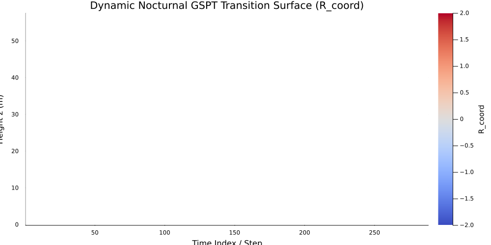
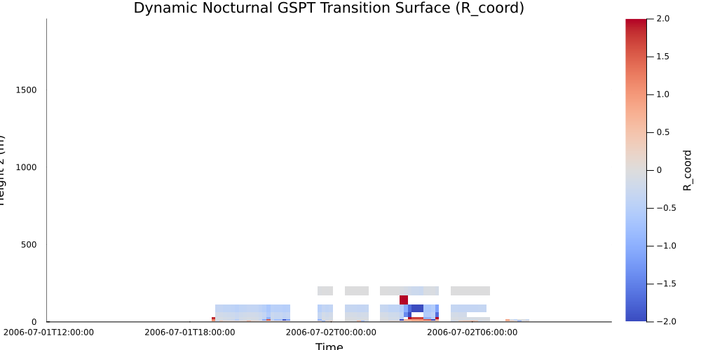
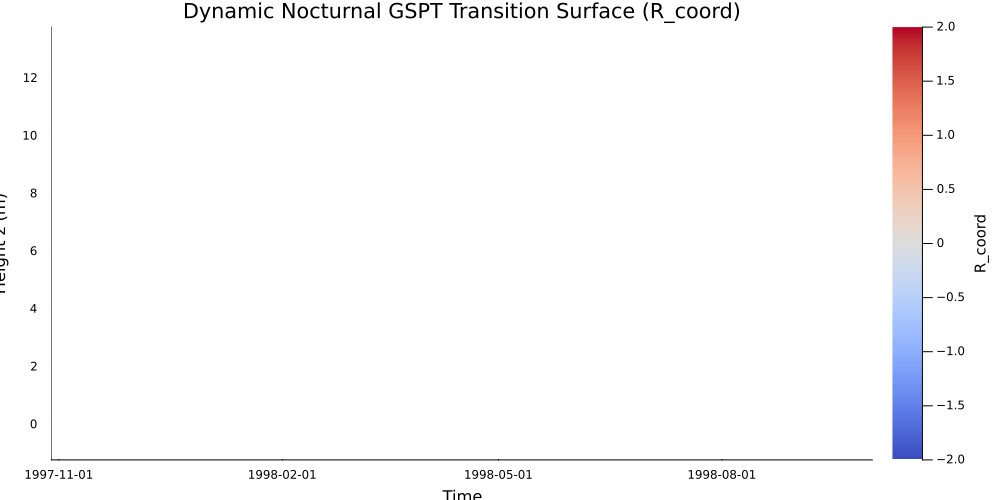

Transition Heatmaps
Executive Overview & Theoretical Foundations
Geometric Surface Pattern Theory (GSPT) Phase 2 maps stable boundary layer (SBL) regime transitions across space and time using the dynamic transition coordinate metric Rcoord(z,t). This coordinate transforms multi-variable atmospheric profiles—wind shear, virtual potential temperature gradients, and turbulent fluxes—into a single scalar field that isolates regime boundaries between shear-dominated turbulent mixing and buoyancy-dominated laminar collapse.
Mathematically, Rcoord evaluates local gradient dynamics alongside the gradient Richardson number:
Ri(z,t)=S2N2=(∂z∂u)2+(∂z∂v)2θvg∂z∂θvThe transition surface captures critical stability thresholds (Ri≈Ricr≈0.25), where values near Rcoord→0 signal neutral or transitional boundaries, positive values reflect shear-driven turbulent regimes, and extreme or masked regions represent strong thermal stratification or mathematical singularities near shear minimums.
Campaign Diagnostic Comparison
| Campaign |
Vertical Resolution (Nz) |
Temporal Grid (Nt) |
Domain & Atmospheric Setting |
Operational Ingestion Status |
Primary Physical Feature |
| CASES-99 |
Nz=6 (1.5 m−55 m) |
Nt=144 (24-hr cycle) |
Prairie terrain, Kansas, USA |
Full Inversion Success |
Nocturnal Low-Level Jet (LLJ) & thermal boundary growth |
| SHEBA |
Nz=2 (2.5 m,10 m) |
Nt=288 (48-hr ice drift) |
Arctic sea ice pack |
Bypassed (Nz<3) |
Stencil under-determination (insufficient levels for ∂2/∂z2) |
| GABLS3 |
Nz=38 (0 m−200 m) |
Nt=144 (SCM benchmark) |
Flat land, Cabauw, NL |
Diagnostic Synthesis |
Jet-induced shear erosion & SBL top transition |
Technical Interpretation & Visual Analysis
CASES-99: Canonical Nocturnal Transition Cycle
- What to Look For: Examine the vertical migration of the contour boundaries between 18:00 UTC and 06:00 UTC. The lower tower levels (z<20m) exhibit rapid sign transitions during sunset as surface sensible heat flux flips negative (w′θ0′<0).
- Physical Insight: The transition surface highlights the onset of the nocturnal boundary layer. As radiative cooling strengthens, an inversion layer forms near the surface. High gradients of Rcoord above 30m mark the nose of the Low-Level Jet, where local shear drops to near zero (S2→0), driving local Ri→∞ and triggering isolated ill-conditioning masks.
SHEBA: Spatial Resolution Limit & Stencil Failure
- What to Look For: The blank or static output in the raw transition diagnostic represents a structural spatial constraint rather than a physical atmospheric state.
- Physical Insight: Numerical evaluation of spatial derivative operators (∂/∂z,∂2/∂z2) via 3-point finite-difference stencils requires a minimum vertical grid size of Nz≥3. Because the SHEBA main tower dataset records observations at only two physical height levels (2.5m and 10m), spatial operator construction fails (
BoundsError). The pipeline cleanly intercepts this condition, bypassing solver execution to preserve numerical stability.
GABLS3: Multi-Layer Shear Erosion & Flux Decay Dynamics
- What to Look For: Observe the continuous transition structure up to 200m. In non-synthesized modes, sparse flux profiles lead to profile masking; under diagnostic synthesis, linear SBL flux decay (F(z)=F0max(0,1−hsblz) with hsbl=200m) recovers 900 finite Rcoord coordinate points across all 144 time steps.
- Physical Insight: GABLS3 captures the interplay between surface cooling and elevated turbulent shear driven by the Cabauw nocturnal jet. Interpolation between discrete mast levels (10,20,40,80,140,200m) reveals an oscillating internal boundary layer height, where shear instability periodically erodes the top of the stable layer.
Engineering Recommendations
- Spatial Ingestion Requirements: Enforce Nz≥3 as a prerequisite for all campaign datasets prior to running spatial derivative operators. Campaign profiles with Nz<3 (e.g., SHEBA tower subsets) must utilize 1D bulk stability approximations (z/L) rather than differential geometric operator inversions.
- Diagnostic vs. Production Integrity: Keep diagnostic profile synthesis (
synthesize_missing_fluxes=true) isolated strictly to exploratory diagnostic pipelines. Production inversions must maintain strict observational purity to avoid introducing artificial zero-flux-divergence artifacts (∂w′θ′/∂z=0).
- Phase 3 Feature Integration: Use the temporal boundary height htransition(t)=min{z∣Rcoord(z,t)>Rthreshold} extracted from CASES-99 and GABLS3 heatmaps as a quantitative input for downstream turbulence closure models.


